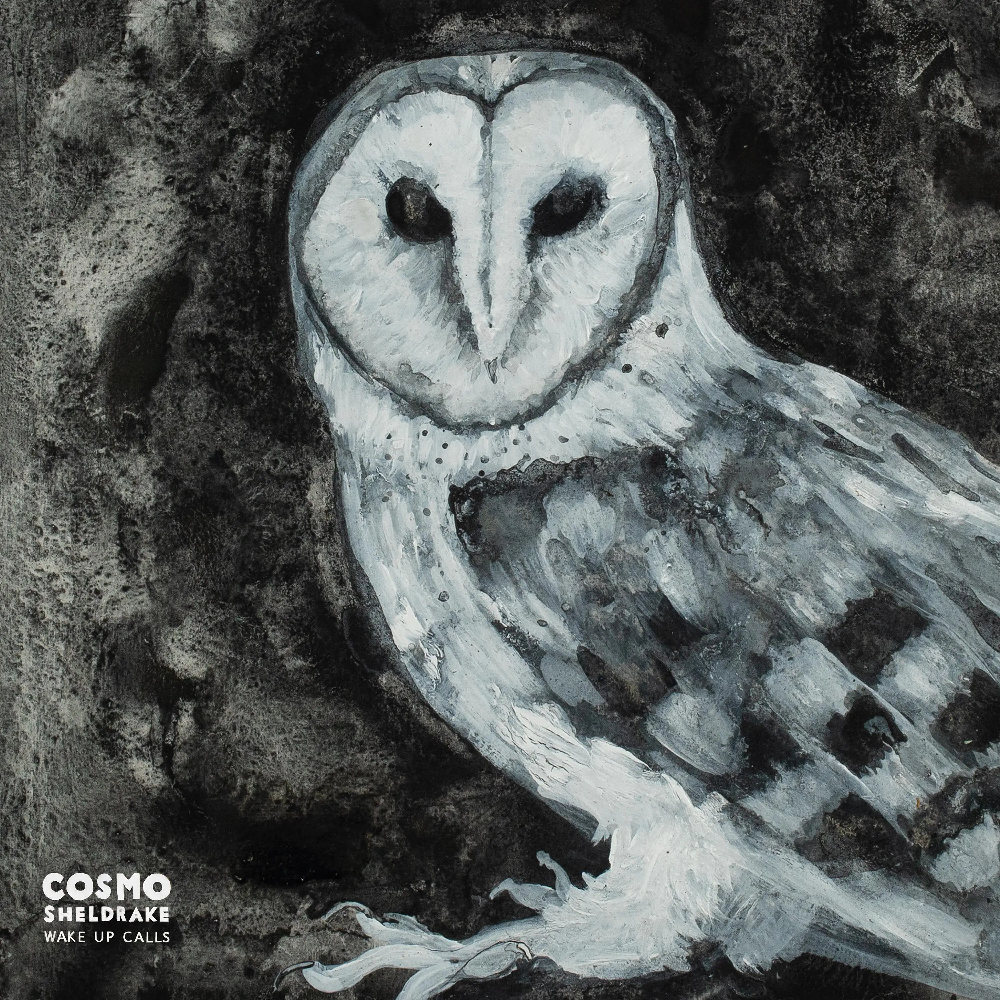
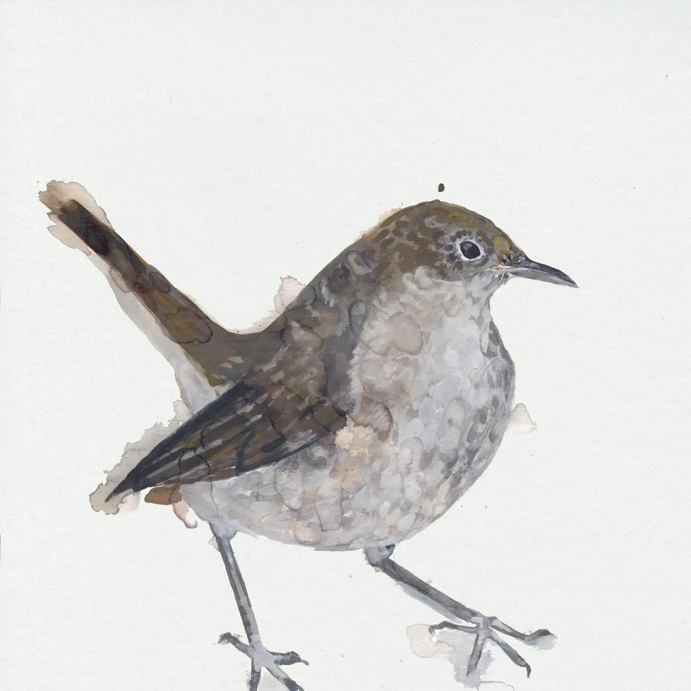

Album#42
Wake Up Calls


{kind=link}
一張由很多鳥類参与制作的専輯，可以當白噪音聴着工作或是入睡，相比单調的白噪音，每首曲子都有一些簡单的旋律，和鳥的聲音相得益彰。専輯里的鳥類大多都被列入英國瀕危鳥類，種類丰富，聲音都很好聴，各有特色，聴着會有一種置身於森林的感覺，給人一種平靜感。
这套音乐作品是我在 2011 年至 2020 年的九年间创作完成的，其中采用了英国濒危鸟类红色和琥珀色名录中收录的鸟鸣录音（不过知更鸟和黑鸟除外，它们目前尚未被列为濒危物种）。
「专辑以夜莺和夜鹃的鸣叫拉开序幕。随着音乐一曲接一曲地推进，从黎明到白昼，再到傍晚的鸟鸣合奏，最终又回到夜晚，伴随着另一只夜莺和一只猫头鹰的歌声。」
由 Benjamin Britten 创作的《杜鹃之歌 (Cuckoo Song)》，收录了声音生态学家 Bernie Krause 在奥尔德堡公墓布里顿墓前录制的杜鹃鸣叫声。
我忍不住收录了一段 Sheldrake 的鸣叫录音 ⸺ 这种鸟正是我们家族姓氏的由来，同时也列入了濒危物种名录。我希望这段音乐能成为一记警钟：在英国许多鸟类的声音濒临灭绝之前，帮助我们更加关注环绕在身边的壮丽多声部声景；并提醒我们，切勿将这些生物及其发出的美妙乐声视为理所当然。
特色鸟类：知更鸟、黑鹂、柳莺、沼泽莺、环颈鸫、槲鸫、夜莺、斑鹀、赤颈鸭、夜莺、短耳鸮、长耳鸮、小鸮、仓鸮、棕鸮、斑鸠、杜鹃、绿头鸭、大白鹭。
由于这张专辑完全由这些鸟类的录音组成，因此《Wake Up Calls》50% 的出版版税将分配给专门致力于保护专辑中收录的鸟类物种或其栖息生态系统的保护组织。
Wake Up Calls - An album comprised of recordings of endangered birds.
{kind=link}

除了這張専輯，我還推薦聴一聴 Cosmo Sheldrake 的另一張専輯 Nightingale Wake Up Calls 1，更喜歡這張専輯的封面。専輯中的兩首 Nightingale 己經收录󠄃在了 Wake Up Calls 這張専輯里，另外還有一首未收录󠄃的 Green Grass (Live in Fingringhoe Wick) 我也蠻喜歡，鳥儿在伴奏， Cosmo Sheldrake 用低沉的嗓音輕輕地啍唱着，也是給人一種平靜安宁的感覺，歌詞也很美。
Green Grass (Live in Fingringhoe Wick) 歌詞
Lay your head where my heart used to be
Hold the earth above me
Lay down in the green grass
Remember when you loved me
Come closer don't be shy
Stand beneath a rainy sky
The moon is over the rise
Think of me as a train goes by
Clear the thistles and brambles
Whistle 'Didn't He Ramble'
Now there's a bubble of me
and it's floating in thee
God took the stars and he tossed them
Can't tell the birds from the blossoms
You'll never be free of me
He'll make a tree from me
Stand in the shade of me
Things are now made of me
The weather vane will say:
It smells like rain today
Don't say good bye to me
Describe the sky to me
And when the sky falls, mark my words
we'll catch a mocking bird
歌词大意
把你的头枕在我的心曾经跳动的地方
以地为席
躺在如茵的草地上
去回忆你爱我的那些时候
靠近点，别害羞
就这样站立在雨天下
月亮升起来了
把我想作一列驶过的火车
清理掉这些蓟和荆棘
吹着口哨，哼唱着“他是否曾游荡…“
现在我变成了一个泡泡
正漂浮在你身上
上帝摘了些星星，抛洒下人间
让你分不清哪些变成了鸟儿，哪些变成了花儿
你永远也摆脱不了我
他（上帝）会把我变成一棵树
让你站在我的荫蔽之下
现在万物皆由我生
这风向标会说
"今天好像要下雨了"
不要对我说再见
跟我聊聊天气吧
当天塌下来的时候，记住我的话
我们去抓一只知更鸟吧
TRACKLIST
Nightjar
Nightingale Part 1
Nightingale (夜歌鸲) (第一部分)
Dawn Chorus
黎明合唱
Skylark
Cuckoo
Marsh Warbler
Cuckoo Song
杜鹃之歌
歌词
What do you do?
In April, I open my bill
In May, I sing night and day
In June, I change my tune
In July, far off I fly
In August, away
I mind
What do you do?
In April, I open my bill
In May, I sing night and day
In June, I change my tune
In July, far off I fly
In August, away
I mind
What do you do?
In April, I open my bill
In May, I sing night and day
In June, I change my tune
In July, far off I fly
In August, away
I mind
歌词大意
你在做什么？
四月，我张开了我的喙
五月，我昼夜歌唱
六月，我改变了我的曲调
七月，我飞向远方
八月，离去
我在意
你在做什么？
四月，我张开了我的喙
五月，我昼夜歌唱
六月，我改变了我的曲调
七月，我飞向远方
八月，离去
我在意
你在做什么？
四月，我张开了我的喙
五月，我昼夜歌唱
六月，我改变了我的曲调
七月，我飞向远方
八月，离去
我在意
Dunnock
Dunnock (林岩鹨)
Bittern
Eurasian Bittern (大麻鳽)
Evening Chorus
黄昏合唱
Mistle Tphrush
Mistle Thrush (槲鸫 )
Nightingale Part 2
新疆歌鸲（第二部分）
Owl Song
Owl (猫头鹰) 之歌 (OvO)
脚注:
其它小鳥可能也有它自己的専輯，可以搜搜看，専輯封面都很好看。